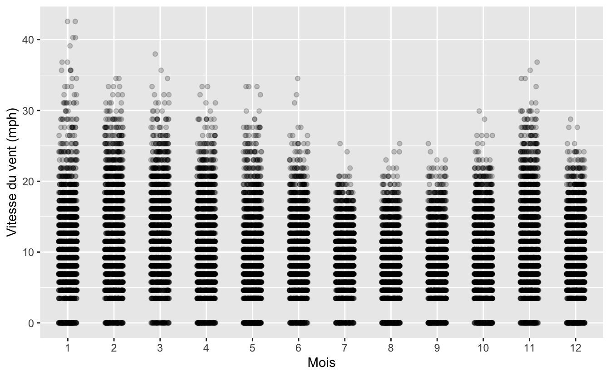

6 Tripatouiller les données avec dplyr
6.1 Pré-requis
Nous abordons ici une étape essentielle de toute analyse de données : la manipulation de tableaux, la sélection de lignes, de colonnes, la création de nouvelles variables, etc. Bien souvent, les données brutes que nous importons dans R ne sont pas utiles en l’état. Il nous faut parfois sélectionner seulement certaines lignes pour travailler sur une petite partie du jeu de données. Il nous faut parfois modifier des variables existantes (pour modifier les unités par exemple) ou en créer de nouvelles à partir des variables existantes. Nous avons aussi très souvent besoin de constituer des groupes et d’obtenir des statistiques descriptives pour chaque groupe (moyenne, écart-type, erreur type, etc). Nous verrons dans ce chapitre comment faire tout cela grâce au package dplyr qui fournit un cadre cohérent et des fonctions simples permettant d’effectuer tous les tripatouillages de données dont nous pourrons avoir besoin.
Dans ce chapitre, nous aurons besoin des packages suivants :
6.2 Le pipe %>%
Avant d’entrer dans le vif du sujet, je souhaite introduire ici la notion de “pipe” (prononcer à l’anglo-saxonne). Le pipe est un opérateur que nous avons déjà vu apparaître à plusieurs reprises dans les chapitres précédents sans expliquer son fonctionnement.
Le pipe, noté %>%, peut être obtenu en pressant les touches ctrl + shift + M de votre clavier (ou command + shift + M sous macOS). Il permet d’enchaîner logiquement des actions les unes à la suite des autres. Globalement, le pipe prend l’objet situé à sa gauche, et le transmet à la fonction situé à sa droite. En d’autres termes, les 2 expressions suivantes sont strictement équivalentes :
# Ici, "f" est une fonction quelconque,
# "x" et "y" sont 2 objets dont la fonction a besoin.
# Il s'agit d'un exemple fictif : ne tapez pas ceci dans votre script !
f(x, y)
x %>% f(y)Travailler avec le pipe est très intéressant car toutes les fonctions de dplyr que nous allons décrire ensuite sont construites autour de la même syntaxe : on leur fournit un data.frame (ou encore mieux, un tibble), elles effectuent une opération et renvoient un nouveau data.frame (ou un nouveau tibble). Il est ainsi possible de créer des groupes de commandes cohérentes qui permettent, grâce à l’enchaînement d’étapes simples, d’aboutir à des résultats complexes.
De la même façon que le + permet d’ajouter une couche supplémentaire à un graphique ggplot2, le pipe %>% permet d’ajouter une opération supplémentaire dans un groupe de commandes.
Pour reprendre un exemple de la section 4.3 sur les nuages de points, nous avions commencé par créer un objet nommé alaska_flights à partir de l’objet flights :
Nous avions ensuite créé notre premier nuage de points avec ce code :
Nous savons maintenant qu’il n’est pas indispensable de faire figurer le nom des arguments data = et mapping =. Mais nous pouvons aller plus loin. En fait, il n’était même pas nécessaire de créer l’objet alaska_flights : nous aurions pu utiliser le pipe pour enchaîner les étapes suivantes :
- On prend le tableau
flights, puis… - On filtre les données pour ne retenir que la compagnie aérienne
AS, puis… - On réalise le graphique.
Voilà comment traduire cela avec le pipe :
Figure 6.1: Notre premier graphique, produit grâce au pipe
Notez bien qu’ici, aucun objet intermédiaire n’a été créé. Notez également que le premier argument de la fonction ggplot() a disparu : le pipe a fourni automatiquement à ggplot() les données générées au préalable (les données flights filtrées grâce à la fonction filter()).
Comme pour le + de ggplot2, il est conseillé de placer un seul pipe par ligne, de le placer en fin de ligne et de revenir à la ligne pour préciser l’étape suivante.
Toutes les commandes que nous utiliserons à partir de maintenant reposeront sur le pipe puisqu’il permet de rendre le code plus lisible.
6.3 Les verbes du tripatouillage de données
Nous allons ici nous concentrer sur les fonctions les plus couramment utilisées pour manipuler et résumer des données. Nous verrons 6 verbes principaux, chacun correspondant à une fonction précise de dplyr. Chaque section de ce chapitre sera consacrée à la présentation d’un exemple utilisant un ou plusieurs de ces verbes.
Les 6 verbes sont :
filter(): choisir des lignes dans un tableau à partir de conditions spécifiques (filtrer).arrange(): trier les lignes d’un tableau selon un ou plusieurs critères (arranger).select(): sélectionner des colonnes d’un tableau.mutate(): créer de nouvelles variables en transformant et combinant des variables existantes (muter).summarise(): calculer des résumés statistiques des données (résumer). Souvent utilisé en combinaison avecgroup_by()(grouper par), qui permet de constituer des groupes au sein des données.join(): associer, fusionner 2data.frames en faisant correspondre les éléments d’une colonne commune entre les 2 tableaux (joindre). Il y a de nombreuses façons de joindre des tableaux. Nous nous contenterons d’examiner les fonctionsleft_join()etinner_join().
Toutes ces fonctions, tous ces verbes, sont utilisés de la même façon : on prend un data.frame, grâce au pipe, on le transmet à l’une de ces fonctions dont on précise les arguments entre parenthèses, la fonction nous renvoie un nouveau tableau modifié. Évidemment, on peut enchaîner les actions pour modifier plusieurs fois le même tableau, c’est tout l’intérêt du pipe.
Enfin, gardez en tête qu’il existe beaucoup plus de fonctions dans dplyr que les 6 que nous allons détailler ici. Nous verrons parfois quelques variantes, mais globalement, maîtriser ces 6 fonctions simples devrait vous permettre de conduire une très large gamme de manipulations de données, et ainsi vous faciliter la vie pour la production de graphiques et l’analyse statistique de vos données.
6.4 Filtrer des lignes avec filter()
6.4.1 Principe

Figure 6.2: Schéma de la fonction filter() tiré de la ‘cheatsheet’ de dplyr et tidyr.
Comme son nom l’indique, filter() permet de filtrer des lignes en spécifiant un ou des critères de tri portant sur une ou plusieurs variables. Nous avons déjà utilisé cette fonction à plusieurs reprises pour créer les jeux de données alaska_flights et small_weather :
Dans les 2 cas, la première ligne de code nous permet :
- D’indiquer le nom du nouvel objet dans lequel les données modifiées seront stockées (
alaska_flightsetsmall-weather). - D’indiquer de quel objet les données doivent être extraites (
flightsetweather). - De passer cet objet à la fonction suivante avec un pipe
%>%.
Le premier argument de la fonction filter() doit être le nom d’un data.frame ou d’un tibble. Ici, puisque nous utilisons le pipe, il est inutile de spécifier cet argument : c’est ce qui est placé à gauche du pipe qui est utilisé comme premier argument de la fonction filter(). Les arguments suivants constituent la ou les conditions qui doivent être respectées par les lignes du tableau de départ afin d’être intégrées au nouveau tableau de données.
6.4.2 Exercice
Dans la section 3.3.1, nous avons utilisé la fonction View et l’application manuelle de filtres pour déterminer combien de vols avaient quitté l’aéroport JFK le 12 février 2013. En utilisant la fonction filter(), créez un objet nommé JFK_12fev qui contiendra les données de ces vols.
Vérifiez que cet objet contient bien 282 lignes.
6.4.3 Les conditions logiques
Dans la section 2.2.4.2, nous avons présenté en détail le fonctionnement des opérateurs de comparaison dans R. Relisez cette section si vous ne savez plus de quoi il s’agit. Les opérateurs de comparaison permettent de vérifier l’égalité ou l’inégalité entre des éléments. Ils renvoient TRUE ou FALSE et seront particulièrement utiles pour filtrer des lignes dans un tableau. Comme indiqué dans la section 2.2.4.2, voici la liste des opérateurs de comparaison usuels :
==: égal à!=: différent de>: supérieur à<: inférieur à>=: supérieur ou égal à<=: inférieur ou égal à
À cette liste, nous pouvons ajouter quelques éléments utiles :
is.na(): renvoieTRUEen cas de données manquantes.!: permet de tester le contraire d’une expression logique. Par exemple!is.na()renvoieTRUEs’il n’y a pas de données manquantes.%in%: permet de tester si l’élément de gauche est contenu dans la série d’éléments fournie à droite. Par exemple2 %in% 1:5renvoieTRUE, mais2 %in% 5:10renvoieFALSE.|: opérateur logiqueOU. Permet de tester qu’une conditionOUune autre est remplie.&: opérateur logiqueET. Permet de tester qu’une conditionETune autre sont remplies.
Voyons comment utiliser ces opérateurs avec la fonction filter().
Dans le tableau flights, tous les vols prévus ont-ils effectivement décollé ? Une bonne façon de le savoir est de regarder si, pour la variable dep_time (heure de décollage), des données manquantes sont présentes :
# A tibble: 8,255 x 19
year month day dep_time sched_dep_time dep_delay arr_time
<int> <int> <int> <int> <int> <dbl> <int>
1 2013 1 1 NA 1630 NA NA
2 2013 1 1 NA 1935 NA NA
3 2013 1 1 NA 1500 NA NA
4 2013 1 1 NA 600 NA NA
5 2013 1 2 NA 1540 NA NA
6 2013 1 2 NA 1620 NA NA
7 2013 1 2 NA 1355 NA NA
8 2013 1 2 NA 1420 NA NA
9 2013 1 2 NA 1321 NA NA
10 2013 1 2 NA 1545 NA NA
# ... with 8,245 more rows, and 12 more variables:
# sched_arr_time <int>, arr_delay <dbl>, carrier <chr>,
# flight <int>, tailnum <chr>, origin <chr>, dest <chr>,
# air_time <dbl>, distance <dbl>, hour <dbl>, minute <dbl>,
# time_hour <dttm>Seules les lignes contenant NA dans la colonne dep_time sont retenues. Il y a donc 8255 vols qui n’ont finalement pas décollé.
Dans le même ordre d’idée, y a t-il des vols qui ont décollé mais qui ne sont pas arrivés à destination ? Là encore, une façon d’obtenir cette information est de sélectionner les vols qui ont décollé (donc pour lesquels l’heure de décollage n’est pas manquante), mais pour lesquels l’heure d’atterrissage est manquante :
# A tibble: 458 x 19
year month day dep_time sched_dep_time dep_delay arr_time
<int> <int> <int> <int> <int> <dbl> <int>
1 2013 1 1 2016 1930 46 NA
2 2013 1 2 2041 2045 -4 NA
3 2013 1 2 2145 2129 16 NA
4 2013 1 9 615 615 0 NA
5 2013 1 9 2042 2040 2 NA
6 2013 1 11 1344 1350 -6 NA
7 2013 1 13 1907 1634 153 NA
8 2013 1 13 2239 2159 40 NA
9 2013 1 16 837 840 -3 NA
10 2013 1 25 1452 1500 -8 NA
# ... with 448 more rows, and 12 more variables:
# sched_arr_time <int>, arr_delay <dbl>, carrier <chr>,
# flight <int>, tailnum <chr>, origin <chr>, dest <chr>,
# air_time <dbl>, distance <dbl>, hour <dbl>, minute <dbl>,
# time_hour <dttm>Notez l’utilisation du ! pour la première condition. Nous récupérons ici les lignes pour lesquelles dep_time n’est pas NA et pour lesquelles arr_time est NA. Seules les lignes qui respectent cette double condition sont retenues. Cette syntaxe est équivalente à :
# A tibble: 458 x 19
year month day dep_time sched_dep_time dep_delay arr_time
<int> <int> <int> <int> <int> <dbl> <int>
1 2013 1 1 2016 1930 46 NA
2 2013 1 2 2041 2045 -4 NA
3 2013 1 2 2145 2129 16 NA
4 2013 1 9 615 615 0 NA
5 2013 1 9 2042 2040 2 NA
6 2013 1 11 1344 1350 -6 NA
7 2013 1 13 1907 1634 153 NA
8 2013 1 13 2239 2159 40 NA
9 2013 1 16 837 840 -3 NA
10 2013 1 25 1452 1500 -8 NA
# ... with 448 more rows, and 12 more variables:
# sched_arr_time <int>, arr_delay <dbl>, carrier <chr>,
# flight <int>, tailnum <chr>, origin <chr>, dest <chr>,
# air_time <dbl>, distance <dbl>, hour <dbl>, minute <dbl>,
# time_hour <dttm>Dans la fonction filter(), séparer plusieurs conditions par des virgules signifie que seules les lignes qui remplissent toutes les conditions seront retenues. C’est donc l’équivalent du ET logique.
Il y a donc 458 vols qui ne sont pas arrivés à destination (soit moins de 0,2% des vols au départ de New York en 2013). Selon vous, quelles raisons peuvent expliquer qu’un vol qui a décollé n’ait pas d’heure d’atterrissage ?
Enfin, pour illustrer l’utilisation de | (le OU logique) et de %in%, imaginons que nous souhaitions extraire les informations des vols ayant quitté l’aéroport JFK à destination d’Atlanta, Géorgie (ATL) et de Seatle, Washington (SEA), aux mois d’octobre, novembre et décembre :
atl_sea_fall <- flights %>%
filter(origin == "JFK",
dest == "ATL" | dest == "SEA",
month >= 10)
atl_sea_fall# A tibble: 962 x 19
year month day dep_time sched_dep_time dep_delay arr_time
<int> <int> <int> <int> <int> <dbl> <int>
1 2013 10 1 638 640 -2 839
2 2013 10 1 729 735 -6 1049
3 2013 10 1 824 830 -6 1030
4 2013 10 1 853 900 -7 1217
5 2013 10 1 1328 1330 -2 1543
6 2013 10 1 1459 1500 -1 1817
7 2013 10 1 1544 1545 -1 1815
8 2013 10 1 1754 1800 -6 2102
9 2013 10 1 1825 1830 -5 2159
10 2013 10 1 1841 1840 1 2058
# ... with 952 more rows, and 12 more variables:
# sched_arr_time <int>, arr_delay <dbl>, carrier <chr>,
# flight <int>, tailnum <chr>, origin <chr>, dest <chr>,
# air_time <dbl>, distance <dbl>, hour <dbl>, minute <dbl>,
# time_hour <dttm>Examinez ce tableau avec View() pour vérifier que la variable dest contient bien uniquement les codes ATL et SEA correspondant aux 2 aéroports qui nous intéressent. Nous avons extrait ici les vols à destination d’Atlanta et Seatle, pourtant, il nous a fallu utiliser le OU logique. Car chaque vol n’a qu’une unique destination, or nous souhaitons récupérer toutes les lignes pour lesquelles la destination est soit ATL, soit SEA (l’une ou l’autre).
Une autre solution pour obtenir le même tableau est de remplacer l’expression contenant | par une expression contenant %in% :
atl_sea_fall2 <- flights %>%
filter(origin == "JFK",
dest %in% c("ATL", "SEA"),
month >= 10)
atl_sea_fall2# A tibble: 962 x 19
year month day dep_time sched_dep_time dep_delay arr_time
<int> <int> <int> <int> <int> <dbl> <int>
1 2013 10 1 638 640 -2 839
2 2013 10 1 729 735 -6 1049
3 2013 10 1 824 830 -6 1030
4 2013 10 1 853 900 -7 1217
5 2013 10 1 1328 1330 -2 1543
6 2013 10 1 1459 1500 -1 1817
7 2013 10 1 1544 1545 -1 1815
8 2013 10 1 1754 1800 -6 2102
9 2013 10 1 1825 1830 -5 2159
10 2013 10 1 1841 1840 1 2058
# ... with 952 more rows, and 12 more variables:
# sched_arr_time <int>, arr_delay <dbl>, carrier <chr>,
# flight <int>, tailnum <chr>, origin <chr>, dest <chr>,
# air_time <dbl>, distance <dbl>, hour <dbl>, minute <dbl>,
# time_hour <dttm>Ici, toutes les lignes du tableau dont la variable dest est égale à un élément du vecteur c("ATL", "SEA") sont retenues. L’utilisation du OU logique peut être source d’erreur. Je préfère donc utiliser %in% qui me semble plus parlant. La fonction identical() nous confirme que les deux façons de faire produisent exactement le même résultat, libre à vous de privilégier la méthode qui vous convient le mieux :
[1] TRUE6.5 Créer des résumés avec summarise() et group_by()
6.5.1 Principe de la fonction summarise()

Figure 6.3: Schéma de la fonction summarise() tiré de la ‘cheatsheet’ de dplyr et tidyr.
La figure 6.3 ci-dessus indique comment fonctionne la fonction summarise() : elle prend plusieurs valeurs (potentiellement, un très grand nombre) et les réduit à une unique valeur qui les résume. Lorsque l’on applique cette démarche à plusieurs colonnes d’un tableau, on obtient un tableau qui ne contient plus qu’une unique ligne de résumé.
La valeur qui résume les données est choisie par l’utilisateur. Il peut s’agir par exemple d’un calcul de moyenne ou de variance, il peut s’agir de calculer une somme, ou d’extraire la valeur maximale ou minimale, ou encore, il peut tout simplement s’agir de déterminer un nombre d’observations.
Ainsi, pour connaître la température moyenne et l’écart-type des températures dans les aéroports de New York, il suffit d’utiliser le tableau weather et sa variable temp que nous avons déjà utilisés dans les chapitres précédents :
# A tibble: 1 x 2
moyenne ecart_type
<dbl> <dbl>
1 NA NALes fonctions mean() et sd() permettent de calculer une moyenne et un écart-type respectivement. Ici, les valeurs retournées sont NA car une valeur de température est manquante :
# A tibble: 1 x 15
origin year month day hour temp dewp humid wind_dir wind_speed
<chr> <dbl> <dbl> <int> <int> <dbl> <dbl> <dbl> <dbl> <dbl>
1 EWR 2013 8 22 9 NA NA NA 320 12.7
# ... with 5 more variables: wind_gust <dbl>, precip <dbl>,
# pressure <dbl>, visib <dbl>, time_hour <dttm>Pour obtenir les valeurs souhaitées, il faut indiquer à R d’exclure les valeurs manquantes lors des calculs de moyennes et écarts-types :
# A tibble: 1 x 2
moyenne ecart_type
<dbl> <dbl>
1 55.3 17.8La température moyenne est donc de 55.3 degrés Farenheit et l’écart-type vaut 17.8 degrés Farenheit.
6.5.2 Intérêt de la fonction group_by()
La fonction devient particulièrement puissante lorsqu’elle est combinée avec la fonction group_by() :

Figure 6.4: Fonctionnement de group_by() travaillant de concert avec summarise(), tiré de la ‘cheatsheet’ de dplyr et tidyr.
Comme son nom l’indique, la fonction group_by() permet de créer des sous-groupes dans un tableau, afin que le résumé des données soit calculé pour chacun des sous-groupes plutôt que sur l’ensemble du tableau. En ce sens, son fonctionnement est analogue à celui des facets de ggplot2 qui permettent de scinder les données d’un graphique en plusieurs sous-groupes.
Pour revenir à l’exemple des températures, imaginons que nous souhaitions calculer les températures moyennes et les écart-types pour chaque mois de l’année. Voilà comment procéder :
weather %>%
group_by(month) %>%
summarise(moyenne = mean(temp, na.rm = TRUE),
ecart_type = sd(temp, na.rm = TRUE))# A tibble: 12 x 3
month moyenne ecart_type
<dbl> <dbl> <dbl>
1 1 35.6 10.2
2 2 34.3 6.98
3 3 39.9 6.25
4 4 51.7 8.79
5 5 61.8 9.68
6 6 72.2 7.55
7 7 80.1 7.12
8 8 74.5 5.19
9 9 67.4 8.47
10 10 60.1 8.85
11 11 45.0 10.4
12 12 38.4 9.98Ici, les étapes sont les suivantes :
- On prend le tableau
weather, puis… - On groupe les données selon la variable
month, puis… - On résume les données groupées sous la forme de moyennes et d’écart-types.
Nous pouvons aller plus loin. Ajoutons à ce résumé 2 variables supplémentaires : le nombre de mesures et l’erreur standard (notée \(se\)), qui peut être calculée de la façon suivante :
\[se \approx \frac{s}{\sqrt{n}}\]
avec \(s\), l’écart-type de l’échantillon et \(n\), la taille de l’échantillon. Cette grandeur est très importante en statistique puisqu’elle nous permet de quantifier l’imprécision de la moyenne. Elle intervient d’ailleurs dans le calcul de l’intervalle de confiance de la moyenne d’un échantillon. Nous allons donc calculer ici ces résumés, et nous donnerons un nom au tableau créé pour pouvoir ré-utiliser ces statistiques descriptives :
monthly_temp <- weather %>%
group_by(month) %>%
summarise(moyenne = mean(temp, na.rm = TRUE),
ecart_type = sd(temp, na.rm = TRUE),
nb_obs = n(),
erreur_std = ecart_type / sqrt(nb_obs))
monthly_temp# A tibble: 12 x 5
month moyenne ecart_type nb_obs erreur_std
<dbl> <dbl> <dbl> <int> <dbl>
1 1 35.6 10.2 2226 0.217
2 2 34.3 6.98 2010 0.156
3 3 39.9 6.25 2227 0.132
4 4 51.7 8.79 2159 0.189
5 5 61.8 9.68 2232 0.205
6 6 72.2 7.55 2160 0.162
7 7 80.1 7.12 2228 0.151
8 8 74.5 5.19 2217 0.110
9 9 67.4 8.47 2159 0.182
10 10 60.1 8.85 2212 0.188
11 11 45.0 10.4 2141 0.226
12 12 38.4 9.98 2144 0.216Vous constatez ici que nous avons 4 statistiques descriptives pour chaque mois de l’année. Deux choses sont importantes à retenir ici :
- On peut obtenir le nombre d’observations dans chaque sous-groupe d’un tableau groupé en utilisant la fonction
n(). Cette fonction n’a besoin d’aucun argument : elle détermine automatiquement la taille des groupes créés pargroup_by(). - On peut créer de nouvelles variables en utilisant le nom de variables créées auparavant. Ainsi, nous avons créé la variable
erreur_stden utilisant deux variables créées au préalable :ecart-typeetnb_obs.
6.5.3 Ajouter des barres d’erreurs sur un graphique
Le tableau monthly_temp que nous venons de créer contient donc les données nécessaires pour nous permettre de visualiser sur un graphique l’évolution des températures moyennes enregistrées dans les 3 aéroports de New York en 2013. Outre les température moyennes, nous devons faire figurer l’imprécision des estimations de moyenne avec des barres d’erreur (à l’aide de la fonction geom_linerange()). Comme expliqué plus haut, l’imprécision des moyennes calculées est estimée grâce à l’erreur standard. Toutefois, ici, les imprécisions sont tellement faibles que les barres d’erreurs resteront invisibles :
monthly_temp %>%
ggplot(aes(x = factor(month), y = moyenne, group = 1)) +
geom_line() +
geom_point() +
geom_linerange(aes(ymin = moyenne - erreur_std,
ymax = moyenne + erreur_std),
color = "red")Figure 6.5: Évolution des températures moyenne dans 3 aéroports de New York en 2013
Vous remarquerez que :
- J’associe
factor(month), et non simplementmonth, à l’axe desxafin d’avoir, sur l’axe des abscisses, des chiffres cohérents allant de 1 à 12, et non des chiffres à virgules. - L’argument
group = 1doit être ajouté pour que la ligne reliant les points apparaisse. En effet, les lignes sont censées relier des points qui appartiennent à une même série temporelle. Or ici, nous avons transformémonthen facteur. Précisergroup = 1permet d’indiquer àgeom_line()que toutes les catégories du facteurmonthappartiennent au même groupe, que ce facteur peut être considéré comme une variable continue, et qu’il est donc correct de relier les points. - La fonction
geom_linerange()contient de nouvelles caractéristiques esthétiques qu’il nous faut obligatoirement renseigner : les extrémités inférieures et supérieures des barres d’erreur. Il nous faut donc associer 2 variables à ces caractéristiques esthétiques. Ici, nous utilisonsmoyenne - erreur_stdpour la borne inférieure des barres d’erreur, etmoyenne + erreur_stdpour la borne supérieure. Les variablesmoyenneeterreur_stdfaisant partie du tableaumonthly_temp,geom_linerange()les trouve sans difficulté. - Les barres d’erreur produites sont minuscules. Je les ai fait apparaître en rouge afin de les rendre visibles, mais même comme cela, il faut zoomer fortement pour les distinguer. Afin de rendre l’utilisation de
geom_linerange()plus explicite, je produis ci-dessous un autre graphique en remplaçant les erreurs standard par les écart-types en guise de barres d’erreur. Attention, ce n’est pas correct d’un point de vue statistique ! Les barres d’erreur doivent permettre de visualiser l’imprécision de la moyenne. C’est donc bien les erreurs standard qu’il faut faire figurer en guise de barres d’erreurs et non les écarty-types. Le graphique ci-dessous ne figure donc qu’à titre d’exemple, afin d’illustrer de façon plus parlante le fonctionnement de la fonctiongeom_linerange():
monthly_temp %>%
ggplot(aes(x = factor(month), y = moyenne, group = 1)) +
geom_line() +
geom_point() +
geom_linerange(aes(ymin = moyenne - ecart_type,
ymax = moyenne + ecart_type)) +
labs(x = "Mois",
y = "Température (ºFarenheit)",
title = "Évolution des températures
dans 3 aéroports de New York en 2013",
subtitle = "Attention : les barres d'erreurs sont les écarts-types.\n
Il faut normalement faire figurer les erreurs standard.")Figure 6.6: Évolution des températures moyenne dans 3 aéroports de New York en 2013
6.5.4 Grouper par plus d’une variable
Jusqu’ici, nous avons groupé les données de température par mois. Il est tout à fait possible de grouper les données par plus d’une variable, par exemple, par mois et par aéroport d’origine :
monthly_orig_temp <- weather %>%
group_by(origin, month) %>%
summarise(moyenne = mean(temp, na.rm = TRUE),
ecart_type = sd(temp, na.rm = TRUE),
nb_obs = n(),
erreur_std = ecart_type / sqrt(nb_obs))
monthly_orig_temp# A tibble: 36 x 6
# Groups: origin [?]
origin month moyenne ecart_type nb_obs erreur_std
<chr> <dbl> <dbl> <dbl> <int> <dbl>
1 EWR 1 35.6 10.8 742 0.396
2 EWR 2 34.3 7.28 669 0.282
3 EWR 3 40.1 6.72 743 0.247
4 EWR 4 53.0 9.60 720 0.358
5 EWR 5 63.3 10.6 744 0.389
6 EWR 6 73.3 8.05 720 0.300
7 EWR 7 80.7 7.37 741 0.271
8 EWR 8 74.5 5.87 740 0.216
9 EWR 9 67.3 9.32 719 0.348
10 EWR 10 59.8 9.79 736 0.361
# ... with 26 more rowsEn plus de la variable month, la tableau monthly_orig_temp contient une variable origin. Les statistiques que nous avons calculées plus tôt sont maintenant disponibles pour chaque mois et chacun des 3 aéroports de New York. Nous pouvons utiliser ces données pour comparer les 3 aéroports :
monthly_orig_temp %>%
ggplot(aes(x = factor(month),
y = moyenne,
group = origin,
color = origin)) +
geom_line() +
geom_point() +
geom_linerange(aes(ymin = moyenne - ecart_type,
ymax = moyenne + ecart_type)) +
labs(x = "Mois",
y = "Température (ºFarenheit)",
title = "Évolution des températures
dans 3 aéroports de New York en 2013",
subtitle = "Attention : les barres d'erreurs sont les écarts-types.\n
Il faut normalement faire figurer les erreurs standard.")Figure 6.7: Évolution des températures moyenne dans 3 aéroports de New York en 2013
Notez que j’utilise maintenant group = origin et non plus group = 1. Ici, les températures des 3 aéroports sont tellement similaires que les courbes sont difficiles à distinguer. Nous pouvons donc utiliser facet_wrap() pour tenter d’améliorer la visualisation :
monthly_orig_temp %>%
ggplot(aes(x = factor(month),
y = moyenne,
group = origin,
color = origin)) +
geom_line() +
geom_point() +
geom_linerange(aes(ymin = moyenne - ecart_type,
ymax = moyenne + ecart_type)) +
facet_wrap(~origin, ncol = 1) +
labs(x = "Mois",
y = "Température (ºFarenheit)",
title = "Évolution des températures
dans 3 aéroports de New York en 2013",
subtitle = "Attention : les barres d'erreurs sont les écarts-types.\n
Il faut normalement faire figurer les erreurs standard.")
Figure 6.8: Évolution des températures moyenne dans 3 aéroports de New York en 2013
Enfin, lorsque nous groupons par plusieurs variables, il peut être utile de présenter les résultats sous la forme d’un tableau large (grâce à la fonction spread(), voir section 5.2.2) pour l’intégration dans un rapport par exemple :
weather %>%
group_by(origin, month) %>%
summarise(moyenne = mean(temp, na.rm = TRUE)) %>%
spread(origin, moyenne)# A tibble: 12 x 4
month EWR JFK LGA
<dbl> <dbl> <dbl> <dbl>
1 1 35.6 35.4 36.0
2 2 34.3 34.2 34.4
3 3 40.1 39.5 40.0
4 4 53.0 50.1 52.1
5 5 63.3 59.3 62.8
6 6 73.3 70.0 73.3
7 7 80.7 78.7 80.8
8 8 74.5 73.8 75.0
9 9 67.3 66.9 67.9
10 10 59.8 59.8 60.6
11 11 44.6 45.1 45.3
12 12 38.0 38.6 38.8Sous cette forme, les données ne sont plus “rangées”, nous n’avons plus des “tidy data”, mais nous avons un tableau plus synthétique, facile à inclure dans un rapport.
6.5.5 Un raccourci pratique pour compter des effectifs
Il est tellement fréquent d’avoir à grouper des données en fonction d’une variable puis à compter le nombre d’observations dans chaque catégorie avec n() que dplyr nous fournit un raccourci : la fonction count().
Ce code :
# A tibble: 12 x 2
month n
<dbl> <int>
1 1 2226
2 2 2010
3 3 2227
4 4 2159
5 5 2232
6 6 2160
7 7 2228
8 8 2217
9 9 2159
10 10 2212
11 11 2141
12 12 2144est équivalent à celui-ci :
# A tibble: 12 x 2
month n
<dbl> <int>
1 1 2226
2 2 2010
3 3 2227
4 4 2159
5 5 2232
6 6 2160
7 7 2228
8 8 2217
9 9 2159
10 10 2212
11 11 2141
12 12 2144Comme avec group_by(), il est bien sûr possible d’utiliser count() avec plusieurs variables :
# A tibble: 36 x 3
# Groups: origin [?]
origin month nombre
<chr> <dbl> <int>
1 EWR 1 742
2 EWR 2 669
3 EWR 3 743
4 EWR 4 720
5 EWR 5 744
6 EWR 6 720
7 EWR 7 741
8 EWR 8 740
9 EWR 9 719
10 EWR 10 736
# ... with 26 more rows6.5.6 Exercices
- Faites un tableau indiquant combien de vols ont été annulés après le décollage, pour chaque compagnie aérienne. Vous devriez obtenir le tableau suivant :
# A tibble: 13 x 2
carrier cancelled
<chr> <int>
1 9E 71
2 AA 34
3 B6 32
4 DL 15
5 EV 105
6 F9 1
7 FL 6
8 MQ 87
9 UA 63
10 US 31
11 VX 4
12 WN 8
13 YV 1- Faites un tableau indiquant les vitesses de vents minimales, maximales et moyennes, enregistrées chaque mois dans chaque aéroport de New York. Votre tableau devrait ressembler à ceci :
# A tibble: 36 x 5
# Groups: origin [?]
origin month max_wind min_wind moy_wind
<chr> <dbl> <dbl> <dbl> <dbl>
1 EWR 1 42.6 0 9.87
2 EWR 2 1048. 0 12.2
3 EWR 3 29.9 0 11.6
4 EWR 4 25.3 0 9.63
5 EWR 5 33.4 0 8.49
6 EWR 6 34.5 0 9.55
7 EWR 7 20.7 0 9.15
8 EWR 8 21.9 0 7.62
9 EWR 9 23.0 0 8.03
10 EWR 10 26.5 0 8.32
# ... with 26 more rows- Sachant que les vitesses du vent sont exprimées en miles par heure, certaines valeurs sont-elles surprenantes ? À l’aide de la fonction
filter(), éliminez la ou les valeurs aberrantes. Vous devriez obtenir ce tableau :
# A tibble: 36 x 5
# Groups: origin [?]
origin month max_wind min_wind moy_wind
<chr> <dbl> <dbl> <dbl> <dbl>
1 EWR 1 42.6 0 9.87
2 EWR 2 31.1 0 10.7
3 EWR 3 29.9 0 11.6
4 EWR 4 25.3 0 9.63
5 EWR 5 33.4 0 8.49
6 EWR 6 34.5 0 9.55
7 EWR 7 20.7 0 9.15
8 EWR 8 21.9 0 7.62
9 EWR 9 23.0 0 8.03
10 EWR 10 26.5 0 8.32
# ... with 26 more rows- En utilisant les données de vitesse de vent du tableau
weather, produisez le graphique suivant :

Indications :
- Les vitesses de vent aberrantes ont été éliminées grâce à la fonction
filter(). - La fonction
geom_jitter()a été utilisée avec l’argumentheight = 0. - La transparence des points est fixée à
0.2.
Selon vous, pourquoi les points sont-ils organisés en bandes horizontales ?
Selon vous, pourquoi n’y a t’il jamais de vent entre 0 et environ 3 miles à l’heure (mph) ?
Sachant qu’en divisant des mph par 1.151 on obtient des vitesses en nœuds, que nous apprend cette commande ?
[1] 0.000000 2.999427 3.999235 4.999044 5.998853 6.998662
[7] 7.998471 8.998280 9.998089 10.997897 11.997706 12.997515
[13] 13.997324 14.997133 15.996942 16.996751 17.996560 18.996368
[19] 19.996177 20.995986 21.995795 22.995604 23.995413 24.995222
[25] 25.995030 26.994839 27.994648 28.994457 29.994266 30.994075
[31] 31.993884 32.993692 33.993501 34.993310 36.992928 910.8258736.6 Sélectionner des variables avec select()

Figure 6.9: Schéma de la fonction select() tiré de la ‘cheatsheet’ de dplyr et tidyr.
Il n’est pas rare de travailler avec des tableaux contenant des centaines, voir des milliers de colonnes. Dans de tels cas, il peut être utile de réduire le jeu de données aux variables qui vous intéressent. Le rôle de la fonction select() est de retenir uniquement les colonnes dont on a spécifié le nom, afin de recentrer l’analyse sur les variables utiles.
select() n’est pas particulièrement utile pour le jeu de données flights puisqu’il ne contient que 19 variables. Toutefois, on peut malgré tout comprendre le fonctionnement général. Par exemle, pour sélectionner uniquement les colonnes year, month et day, on tape :
# A tibble: 336,776 x 3
year month day
<int> <int> <int>
1 2013 1 1
2 2013 1 1
3 2013 1 1
4 2013 1 1
5 2013 1 1
6 2013 1 1
7 2013 1 1
8 2013 1 1
9 2013 1 1
10 2013 1 1
# ... with 336,766 more rowsPuisque ces 3 variables sont placées les unes à côté des autres dans le tableau flights, on peut utiliser la notation : pour les sélectionner :
# A tibble: 336,776 x 3
year month day
<int> <int> <int>
1 2013 1 1
2 2013 1 1
3 2013 1 1
4 2013 1 1
5 2013 1 1
6 2013 1 1
7 2013 1 1
8 2013 1 1
9 2013 1 1
10 2013 1 1
# ... with 336,766 more rowsÀ l’inverse, si on veut supprimer certaines colonnes, on peut utiliser la notation - :
# Sélection de toutes les variables de `flights` à l'exception
# de celles comprises entre `year` et `day` (inclues)
flights %>%
select(-(year:day))# A tibble: 336,776 x 16
dep_time sched_dep_time dep_delay arr_time sched_arr_time arr_delay
<int> <int> <dbl> <int> <int> <dbl>
1 517 515 2 830 819 11
2 533 529 4 850 830 20
3 542 540 2 923 850 33
4 544 545 -1 1004 1022 -18
5 554 600 -6 812 837 -25
6 554 558 -4 740 728 12
7 555 600 -5 913 854 19
8 557 600 -3 709 723 -14
9 557 600 -3 838 846 -8
10 558 600 -2 753 745 8
# ... with 336,766 more rows, and 10 more variables: carrier <chr>,
# flight <int>, tailnum <chr>, origin <chr>, dest <chr>,
# air_time <dbl>, distance <dbl>, hour <dbl>, minute <dbl>,
# time_hour <dttm>Il y a beaucoup de fonctions permettant de sélectionner des variables dont le noms respectent certains critères. Par exemple :
starts_with("abc"): renvoie toutes les variables dont les noms commencent par “abc”ends_with("xyz"): renvoie toutes les variables dont les noms se terminent par “xyz”contains("ijk"): renvoie toutes les variables dont les noms contiennent “ijk”
Il en existe beaucoup d’autres. Vous pouvez consulter l’aide de ?select() pour en savoir plus.
Ainsi, il est par exemple possible d’extraire toutes les variables contenant le mot “time” ainsi :
# A tibble: 336,776 x 6
dep_time sched_dep_time arr_time sched_arr_time air_time
<int> <int> <int> <int> <dbl>
1 517 515 830 819 227
2 533 529 850 830 227
3 542 540 923 850 160
4 544 545 1004 1022 183
5 554 600 812 837 116
6 554 558 740 728 150
7 555 600 913 854 158
8 557 600 709 723 53
9 557 600 838 846 140
10 558 600 753 745 138
# ... with 336,766 more rows, and 1 more variable: time_hour <dttm>Évidemment, le tableau flights n’est pas modifié par cette opération : il contient toujours les 19 variables de départ. Pour travailler avec ces tableaux de données contenant moins de variables, il faut les stocker dans un nouvel objet en leur donnant un nom :
Enfin, on peut utiliser select() pour renommer des variables. Mais ce n’est que rarement utile car select() élimine toutes les variables qui n’ont pas été explicitement nommées :
# A tibble: 336,776 x 5
year month day heure_depart retard_depart
<int> <int> <int> <int> <dbl>
1 2013 1 1 517 2
2 2013 1 1 533 4
3 2013 1 1 542 2
4 2013 1 1 544 -1
5 2013 1 1 554 -6
6 2013 1 1 554 -4
7 2013 1 1 555 -5
8 2013 1 1 557 -3
9 2013 1 1 557 -3
10 2013 1 1 558 -2
# ... with 336,766 more rowsIl est donc généralement préférable d’utiliser rename() pour renommer certaines variables sans en éliminer aucune :
# A tibble: 336,776 x 19
year month day heure_depart sched_dep_time retard_depart
<int> <int> <int> <int> <int> <dbl>
1 2013 1 1 517 515 2
2 2013 1 1 533 529 4
3 2013 1 1 542 540 2
4 2013 1 1 544 545 -1
5 2013 1 1 554 600 -6
6 2013 1 1 554 558 -4
7 2013 1 1 555 600 -5
8 2013 1 1 557 600 -3
9 2013 1 1 557 600 -3
10 2013 1 1 558 600 -2
# ... with 336,766 more rows, and 13 more variables: arr_time <int>,
# sched_arr_time <int>, arr_delay <dbl>, carrier <chr>,
# flight <int>, tailnum <chr>, origin <chr>, dest <chr>,
# air_time <dbl>, distance <dbl>, hour <dbl>, minute <dbl>,
# time_hour <dttm>6.7 Créer de nouvelles variables avec mutate()
6.7.1 Principe

Figure 6.10: Schéma de la fonction mutate() tiré de la ‘cheatsheet’ de dplyr et tidyr.
La fonction mutate() permet de créer de nouvelles variables à partir des variables existantes, ou de modifier des variables déjà présentes dans un jeu de données. Il est en effet fréquent d’avoir besoin de calculer de nouvelles variables, souvent plus informatives que les variables disponibles.
Voyons un exemple. Nous commençons par créer un nouveau jeu de données flights_sml en sélectionnant uniquement les variables qui nous seront utiles :
# A tibble: 336,776 x 7
year month day dep_delay arr_delay distance air_time
<int> <int> <int> <dbl> <dbl> <dbl> <dbl>
1 2013 1 1 2 11 1400 227
2 2013 1 1 4 20 1416 227
3 2013 1 1 2 33 1089 160
4 2013 1 1 -1 -18 1576 183
5 2013 1 1 -6 -25 762 116
6 2013 1 1 -4 12 719 150
7 2013 1 1 -5 19 1065 158
8 2013 1 1 -3 -14 229 53
9 2013 1 1 -3 -8 944 140
10 2013 1 1 -2 8 733 138
# ... with 336,766 more rowsÀ partir de ce nouveau tableau, nous allons calculer 2 nouvelles variables :
gain: afin de savoir si les avions peuvent rattraper une partie de leur retard en vol, nous allons calculer la différence entre le retard au départ et à l’arrivée (donc le gain de temps accumlé lors du vol). En effet, si un avion décolle avec 15 minutes de retard, mais qu il atterrit avec seulement 5 minutes de retard, 10 minutes ont été gagnées en vol, et les passagers sont moins mécontents.speedafin de connaitre la vitesse moyenne des avions en vol, nous allons diviser la distance parcourue par les avions par le temps passé en l’air. Il ne faudra pas oublier de multiplier par 60 car les temps sont exprimés en minutes. Nous en profiterons pour transformer les distances exprimées en miles par des distances exprimées en kilomètres en multipliant les distances en miles par 1.60934. Ainsi,speedsera exprimée en kilomètres par heure.
flights_sml %>%
mutate(gain = dep_delay - arr_delay,
distance = distance * 1.60934,
speed = (distance / air_time) * 60)# A tibble: 336,776 x 9
year month day dep_delay arr_delay distance air_time gain speed
<int> <int> <int> <dbl> <dbl> <dbl> <dbl> <dbl> <dbl>
1 2013 1 1 2 11 2253. 227 -9 596.
2 2013 1 1 4 20 2279. 227 -16 602.
3 2013 1 1 2 33 1753. 160 -31 657.
4 2013 1 1 -1 -18 2536. 183 17 832.
5 2013 1 1 -6 -25 1226. 116 19 634.
6 2013 1 1 -4 12 1157. 150 -16 463.
7 2013 1 1 -5 19 1714. 158 -24 651.
8 2013 1 1 -3 -14 369. 53 11 417.
9 2013 1 1 -3 -8 1519. 140 5 651.
10 2013 1 1 -2 8 1180. 138 -10 513.
# ... with 336,766 more rowsSi on souhaite conserver uniquement les variables nouvellement créées par mutate(), on peut utiliser transmute() :
flights_sml %>%
transmute(gain = dep_delay - arr_delay,
distance = distance * 1.60934,
speed = (distance / air_time) * 60)# A tibble: 336,776 x 3
gain distance speed
<dbl> <dbl> <dbl>
1 -9 2253. 596.
2 -16 2279. 602.
3 -31 1753. 657.
4 17 2536. 832.
5 19 1226. 634.
6 -16 1157. 463.
7 -24 1714. 651.
8 11 369. 417.
9 5 1519. 651.
10 -10 1180. 513.
# ... with 336,766 more rowsEt comme toujours, pour pouvoir réutiliser ces données, on leur donne un nom :
6.7.2 Transformer des variables en facteurs
Il n’est pas rare que les tableaux de données que nous importons contiennent des colonnes numériques ou de chaînes de caractères qui devraient en réalité être reconnues en tant que facteurs. La fonction mutate nous permet de changer rapidement le type d’une variable afin qu’elle soit reconnue comme un facteur.
À titre d’exemple, nous allons importer le jeu de données contenu dans le fichier squid.txt que vous pourrez télécharger ici. Placez-le dans votre répertoire de travail et utilisez la méthode décrite à la section 5.3.3 pour obtenir la commande suivante :
# A tibble: 2,644 x 6
Sample Year Month Location Sex GSI
<dbl> <dbl> <dbl> <dbl> <dbl> <dbl>
1 1 1 1 1 2 10.4
2 2 1 1 3 2 9.83
3 3 1 1 1 2 9.74
4 4 1 1 1 2 9.31
5 5 1 1 1 2 8.99
6 6 1 1 1 2 8.77
7 7 1 1 1 2 8.26
8 8 1 1 3 2 7.40
9 9 1 1 3 2 7.22
10 10 1 2 1 2 6.84
# ... with 2,634 more rowsCe jeu de données contient des informations sur l’Indice Gonado-Somatique (GSI) de 2644 pieuvres collectées dans 4 stations d’échantillonnage sur une période de 2 ans. La variable Location est codée sous forme d’entiers, or il devrait s’agir d’un facteur. La fonction mutate() nous permet d’effectuer la transformation :
# A tibble: 2,644 x 6
Sample Year Month Location Sex GSI
<dbl> <dbl> <dbl> <fct> <dbl> <dbl>
1 1 1 1 1 2 10.4
2 2 1 1 3 2 9.83
3 3 1 1 1 2 9.74
4 4 1 1 1 2 9.31
5 5 1 1 1 2 8.99
6 6 1 1 1 2 8.77
7 7 1 1 1 2 8.26
8 8 1 1 3 2 7.40
9 9 1 1 3 2 7.22
10 10 1 2 1 2 6.84
# ... with 2,634 more rowsDe même, la variable Sex est codée sous forme numérique, or il devrait s’agir d’un facteur, les 1 correspondants aux mâles et les 2 aux femelles. Nous pouvons là encore faire la modification grâce à la fonction mutate() :
squid2 <- squid %>%
mutate(Location = factor(Location),
Sex = factor(Sex, levels = c(1, 2), labels = c("Male", "Female")))
squid2# A tibble: 2,644 x 6
Sample Year Month Location Sex GSI
<dbl> <dbl> <dbl> <fct> <fct> <dbl>
1 1 1 1 1 Female 10.4
2 2 1 1 3 Female 9.83
3 3 1 1 1 Female 9.74
4 4 1 1 1 Female 9.31
5 5 1 1 1 Female 8.99
6 6 1 1 1 Female 8.77
7 7 1 1 1 Female 8.26
8 8 1 1 3 Female 7.40
9 9 1 1 3 Female 7.22
10 10 1 2 1 Female 6.84
# ... with 2,634 more rowssquid2 contient maintenant le tableau de départ avec les variables Location et Sex codées sous forme de facteur. Si nous faisons un graphique avec ces nouveaux facteurs, l’ordre des catégories sera celui spécifié par la fonction factor(). Ainsi, si nous faisons par exemple un boxplot de GSI en fonction du Sex, voilà ce que nous obtenons :

Figure 6.11: Indice Gonado Somatique selon le sexe.
Comment faire pour inverser l’ordre des catégories sur l’axe des abscisses ? Il faut inverser l’ordre des catégories dans le facteur Sex. L’ordre dans lequel les catégories apparaissent sur un graphique est en effet déterminé par l’ordre dans lequel les niveaux du facteur sont organisés. D’habitude, les niveaux sont automatiquement triés par ordre alphabétique quand les catégories sont des chaînes de caractères, et en ordre croissant quand la variable est numérique. Ici les niveaux sont les suivants :
[1] "Male" "Female"Male apparaît avant Female, car les niveaux de départ étaient 1 pour les mâles et 2 pour les femelles. C’est donc cet ordre qui est conservé. Le package forcats fournit de nombreuses fonctions permettant de manipuler les facteurs. Toutes commencent par fct_. Nous pouvons ici utiliser fct_rev() pour inverser l’ordre des niveaux. Pensez à installer et charger forcats si ce n’est pas déjà fait. Si vous avez chargé le tidyverse, forcats est déjà disponible :
[1] "Female" "Male" Figure 6.12: Indice Gonado Somatique selon le sexe.
Revenons maintenant au jeu de données dauphin.
# A tibble: 93 x 9
ID Sexe Statut Taille Age Cd Cu Hg Organe
<chr> <chr> <chr> <dbl> <dbl> <dbl> <dbl> <dbl> <chr>
1 Numéro 1 f imm 315 3 29.6 3.24 NA rein
2 Numéro 2 f imm 357 4 55.1 4.42 NA rein
3 Numéro 3 f pnl 439 34 129. 5.01 9.02 rein
4 Numéro 4 f imm 316 4 71.2 4.33 NA rein
5 Numéro 5 f l 435 26 192 5.15 NA rein
6 Numéro 6 f pnl 388 6 NA 4.12 4.53 rein
7 Numéro 7 f mat 410 NA 76 5.1 33.9 foie
8 Numéro 8 m imm 355 NA 74.4 4.72 13.3 foie
9 Numéro 9 m imm 222 NA 0.09 9.5 2.89 foie
10 Numéro 10 m imm 412 9 85.6 5.42 NA rein
# ... with 83 more rowsCommençons par supprimer la variable ID, qui est totalement redondante avec les numéros de ligne :
# A tibble: 93 x 8
Sexe Statut Taille Age Cd Cu Hg Organe
<chr> <chr> <dbl> <dbl> <dbl> <dbl> <dbl> <chr>
1 f imm 315 3 29.6 3.24 NA rein
2 f imm 357 4 55.1 4.42 NA rein
3 f pnl 439 34 129. 5.01 9.02 rein
4 f imm 316 4 71.2 4.33 NA rein
5 f l 435 26 192 5.15 NA rein
6 f pnl 388 6 NA 4.12 4.53 rein
7 f mat 410 NA 76 5.1 33.9 foie
8 m imm 355 NA 74.4 4.72 13.3 foie
9 m imm 222 NA 0.09 9.5 2.89 foie
10 m imm 412 9 85.6 5.42 NA rein
# ... with 83 more rowsLes variables Sexe, Statut et Organe devrait elles aussi être encodées sous forme de facteurs. Plutôt que de taper le code ci dessous (qui fonctionne très bien) :
Nous pouvons utiliser la fonction mutate_if(), qui appliquera la même fonction à toutes les variables respectant une condition précise. Ici, toutes les colonnes possédant le type <chr> sont des colonnes que nous souhaitons transformer en facteur. Nous pouvons donc taper ceci :
# A tibble: 93 x 8
Sexe Statut Taille Age Cd Cu Hg Organe
<fct> <fct> <dbl> <dbl> <dbl> <dbl> <dbl> <fct>
1 f imm 315 3 29.6 3.24 NA rein
2 f imm 357 4 55.1 4.42 NA rein
3 f pnl 439 34 129. 5.01 9.02 rein
4 f imm 316 4 71.2 4.33 NA rein
5 f l 435 26 192 5.15 NA rein
6 f pnl 388 6 NA 4.12 4.53 rein
7 f mat 410 NA 76 5.1 33.9 foie
8 m imm 355 NA 74.4 4.72 13.3 foie
9 m imm 222 NA 0.09 9.5 2.89 foie
10 m imm 412 9 85.6 5.42 NA rein
# ... with 83 more rowsNous constatons ici que nos 3 variables catégorielles ont bien été transformées en facteurs (et seulement ces variables).
Nous allons encore réaliser 2 modifications :
- Nous allons transformer les niveaux
fetmdu facteurSexeenFemaleetMalerespectivement. - Nous allons re-ordonner les niveaux du facteur
Statut. Actuellement, les niveaux de ce facteur sont les suivants :
[1] "imm" "l" "mat" "pl" "pnl" "repos"Or il exsite un ordre des statuts reproducteurs qui reflète une progression biologique :
imm (immature), mat (mature), pnl (pregnant non lactating), l (lactating), pl (pregnant lactating), repos (repos somatique).
Commençons par changer les niveaux du facteur Sexe. Pour cela, nous pouvons utiliser la fonction fct_recode() :
# A tibble: 93 x 8
Sexe Statut Taille Age Cd Cu Hg Organe
<fct> <fct> <dbl> <dbl> <dbl> <dbl> <dbl> <fct>
1 Female imm 315 3 29.6 3.24 NA rein
2 Female imm 357 4 55.1 4.42 NA rein
3 Female pnl 439 34 129. 5.01 9.02 rein
4 Female imm 316 4 71.2 4.33 NA rein
5 Female l 435 26 192 5.15 NA rein
6 Female pnl 388 6 NA 4.12 4.53 rein
7 Female mat 410 NA 76 5.1 33.9 foie
8 Male imm 355 NA 74.4 4.72 13.3 foie
9 Male imm 222 NA 0.09 9.5 2.89 foie
10 Male imm 412 9 85.6 5.42 NA rein
# ... with 83 more rowsNous pouvons maintenant modifier l’ordre des niveaux de Satut :
dauphin <- dauphin %>%
mutate(Sexe = fct_recode(Sexe,
"Female" = "f",
"Male" = "m"),
Statut = fct_relevel(Statut, "imm", "mat", "pnl", "l", "pl", "repos"))
dauphin# A tibble: 93 x 8
Sexe Statut Taille Age Cd Cu Hg Organe
<fct> <fct> <dbl> <dbl> <dbl> <dbl> <dbl> <fct>
1 Female imm 315 3 29.6 3.24 NA rein
2 Female imm 357 4 55.1 4.42 NA rein
3 Female pnl 439 34 129. 5.01 9.02 rein
4 Female imm 316 4 71.2 4.33 NA rein
5 Female l 435 26 192 5.15 NA rein
6 Female pnl 388 6 NA 4.12 4.53 rein
7 Female mat 410 NA 76 5.1 33.9 foie
8 Male imm 355 NA 74.4 4.72 13.3 foie
9 Male imm 222 NA 0.09 9.5 2.89 foie
10 Male imm 412 9 85.6 5.42 NA rein
# ... with 83 more rows[1] "imm" "mat" "pnl" "l" "pl" "repos"Toutes les transformations que nous avons fait subir à ce jeu de données n’ont qu’un seul objectif : “ranger” ce jeu de données. Nous avons importé dauphin depuis un fichier externe, puis nous avons supprimé les variables inutiles et modifié celles qui devaient l’être. Toutes ces étapes peuvent être enchaînées grâce au pipe, de la façon suivante :
# Importation et mise en forme du jeu de données `dauphin`
library(readxl)
dauphin <- read_excel("data/dauphin.xls", na = "*", skip = 9) %>% # Importation, puis
rename(ID = `N°`, # On donne des noms courts, puis
Statut = `Statut reproducteur`,
Taille = `Taille en cm`,
Age = `Age en années`,
Cd = `Cd (mg.kg-1)`,
Cu = `Cu (mg.kg-1)`,
Hg = `Hg (mg.kg-1)`) %>%
select(-ID) %>% # On supprime la colonne `ID`, puis
mutate_if(is.character, as.factor) %>% # On transforme en facteurs les variables <chr>, puis
mutate(Sexe = fct_recode(Sexe, # On modifie les niveau de `Sexe` et l'ordre des niveaux de Statut
"Female" = "f",
"Male" = "m"),
Statut = fct_relevel(Statut, "imm", "mat", "pnl", "l", "pl", "repos"))
dauphin# A tibble: 93 x 8
Sexe Statut Taille Age Cd Cu Hg Organe
<fct> <fct> <dbl> <dbl> <dbl> <dbl> <dbl> <fct>
1 Female imm 315 3 29.6 3.24 NA rein
2 Female imm 357 4 55.1 4.42 NA rein
3 Female pnl 439 34 129. 5.01 9.02 rein
4 Female imm 316 4 71.2 4.33 NA rein
5 Female l 435 26 192 5.15 NA rein
6 Female pnl 388 6 NA 4.12 4.53 rein
7 Female mat 410 NA 76 5.1 33.9 foie
8 Male imm 355 NA 74.4 4.72 13.3 foie
9 Male imm 222 NA 0.09 9.5 2.89 foie
10 Male imm 412 9 85.6 5.42 NA rein
# ... with 83 more rowsOutre les fonction fct_rev(), fct_recode() et fct_relevel() abordées ici, on peut aussi noter :
* fct_reorder() et fct_reorder2(), pour ordonner automatiquement les niveaux d’un facteur en fonction d’une autre variable numerique (pour avoir par exemple des séries rangées par ordre de moyenne croissante sur un graphique)
* fct_infreq(), pour ordonner automatiquement les niveaux d’un facteur oar ordre de fréquence croissante, ce qui est notamment utile pour faire des barplots ordonnés
* fct_collapse(), pour fusionner deux ou plusieurs niveaux d’un facteur
Nous n’avons pas le temps de développer ici des exemples, mais sachez que ces fonctiosn existent. Vous trouverez des exemples détaillés dans le chapitre consacré aux facteurs de l’ouvrage en ligne R for Data Science. C’est en anglais, mais les exemples sont très parlants. N’hésitez pas à consulter cet ouvrage et à faire des essais de mise en application avec les jeux de données vus ici (e.g. dauphin ou squid).
6.7.3 Exercices
Dans
ggplot2le jeu de donnéesmpgcontient des informations sur 234 modèles de voitures. Examinez ce jeu de données avec la fonctionView()et consultez l’aide de ce jeu de données pour savoir à quoi correspondent les différentes variables. Quelle(s) variable(s) nous renseignent sur la consommation des véhicules ? À quoi correspond la variabledisp?La consommation est donnée en miles par gallon. Créez une nouvelle variable
consoqui contiendra la consommation exprimée en nombre de litres pour 100 kilomètres.Faîtes un graphique présentant la relation entre la cylindrée en litres et la consommation sur autoroute exprimée en nombre de litres pour 100 kilomètres. Vous excluerez les véhicules dont la
classe est2seaterde ce graphique (il s’agit de voitures de sports très compactes qu’il est difficile de mesurer aux autres). Sur votre graphique, la couleur devrait représenter le type de véhicule. Vous ajouterez une droite de régression en utilisantgeom_smooth(method = "lm"). Votre graphique devrait ressembler à ceci :
Figure 6.13: Consommation en fonction de la cylindrée
- Ce graphique présente-t’il correctement l’ensemble des données de ces 2 variables ? Pourquoi ? Comparez le graphique 6.13 de la question 3 ci-dessus et le graphique 6.14 présenté ci-dessous. Selon vous, quels arguments et/ou fonctions ont été modifiés pour arriver à ce nouveau graphique ? Quels sont les avantages et les inconvénients de ce graphique par rapport au précédent ?
Figure 6.14: Consommation en fonction de la cylindrée
6.8 Trier des lignes avec arrange()

Figure 6.15: Schéma de la fonction arrange() tiré de la ‘cheatsheet’ de dplyr et tidyr.
La fonction arrange() permet de trier des tableaux en ordonnant les éléments d’une ou plusieurs colonnes. Les tris peuvent être en ordre croissants (c’est le cas par défaut) ou décroissants (grâce à la fonction desc(), abbréviation de “descending”).
arrange() fonctionne donc comme filter(), mais au lieu de sélectionner des lignes, cette fonction change leur ordre. Il faut lui fournir le nom d’un tableau et au minimum le nom d’une variable selon laquelle le tri doit être réalisé. Si plusieurs variables sont fournies, chaque variable supplémentaire permet de résoudre les égalités. Ainsi, pour ordonner le tableau flights par ordre croissant de retard au départ (dep_delay), on tape :
# A tibble: 336,776 x 19
year month day dep_time sched_dep_time dep_delay arr_time
<int> <int> <int> <int> <int> <dbl> <int>
1 2013 12 7 2040 2123 -43 40
2 2013 2 3 2022 2055 -33 2240
3 2013 11 10 1408 1440 -32 1549
4 2013 1 11 1900 1930 -30 2233
5 2013 1 29 1703 1730 -27 1947
6 2013 8 9 729 755 -26 1002
7 2013 10 23 1907 1932 -25 2143
8 2013 3 30 2030 2055 -25 2213
9 2013 3 2 1431 1455 -24 1601
10 2013 5 5 934 958 -24 1225
# ... with 336,766 more rows, and 12 more variables:
# sched_arr_time <int>, arr_delay <dbl>, carrier <chr>,
# flight <int>, tailnum <chr>, origin <chr>, dest <chr>,
# air_time <dbl>, distance <dbl>, hour <dbl>, minute <dbl>,
# time_hour <dttm>Notez que la variable dep-delay est maintenant triée en ordre croissant. Notez également que 2 vols ont eu exactement 25 minutes d’avance. Comparez le tableau précédent avec celui-ci :
# A tibble: 336,776 x 19
year month day dep_time sched_dep_time dep_delay arr_time
<int> <int> <int> <int> <int> <dbl> <int>
1 2013 12 7 2040 2123 -43 40
2 2013 2 3 2022 2055 -33 2240
3 2013 11 10 1408 1440 -32 1549
4 2013 1 11 1900 1930 -30 2233
5 2013 1 29 1703 1730 -27 1947
6 2013 8 9 729 755 -26 1002
7 2013 3 30 2030 2055 -25 2213
8 2013 10 23 1907 1932 -25 2143
9 2013 3 2 1431 1455 -24 1601
10 2013 5 5 934 958 -24 1225
# ... with 336,766 more rows, and 12 more variables:
# sched_arr_time <int>, arr_delay <dbl>, carrier <chr>,
# flight <int>, tailnum <chr>, origin <chr>, dest <chr>,
# air_time <dbl>, distance <dbl>, hour <dbl>, minute <dbl>,
# time_hour <dttm>Les lignes des 2 vols ayant 25 minutes d’avance au décollage ont été inversées : le vol du mois de mars apparait maintenant avant le vol du mois d’octobre. La variable month a été utilisée pour ordonner les lignes en cas d’égalité de la variable dep_delay.
Comme indiqué plus haut, il est possible de trier les données par ordre décroissant :
# A tibble: 336,776 x 19
year month day dep_time sched_dep_time dep_delay arr_time
<int> <int> <int> <int> <int> <dbl> <int>
1 2013 1 9 641 900 1301 1242
2 2013 6 15 1432 1935 1137 1607
3 2013 1 10 1121 1635 1126 1239
4 2013 9 20 1139 1845 1014 1457
5 2013 7 22 845 1600 1005 1044
6 2013 4 10 1100 1900 960 1342
7 2013 3 17 2321 810 911 135
8 2013 6 27 959 1900 899 1236
9 2013 7 22 2257 759 898 121
10 2013 12 5 756 1700 896 1058
# ... with 336,766 more rows, and 12 more variables:
# sched_arr_time <int>, arr_delay <dbl>, carrier <chr>,
# flight <int>, tailnum <chr>, origin <chr>, dest <chr>,
# air_time <dbl>, distance <dbl>, hour <dbl>, minute <dbl>,
# time_hour <dttm>Cela est particulièrement utile après l’obtention de résumés groupés pour connaître la catégorie la plus représentée. Par exemple, si nous souhaitons connaître les destinations la plus fréquentes au départ de New York, on peut procéder ainsi :
- prendre le tableau
flights, puis, - grouper les données par destination (variable
dest) et compter le nombre de vols. Ces deux opérations peuvent être effectuées avecgroup_by()puissummarise(), ou directement aveccount(). Puis, - trier les données par effectif décroissant.
# A tibble: 105 x 2
dest n
<chr> <int>
1 ORD 17283
2 ATL 17215
3 LAX 16174
4 BOS 15508
5 MCO 14082
6 CLT 14064
7 SFO 13331
8 FLL 12055
9 MIA 11728
10 DCA 9705
# ... with 95 more rowsNous voyons ici que les aéroports ORD et ATL sont les 2 destinations les plus fréquentes, avec plus de 17000 vols par an.
6.9 Associer plusieurs tableaux avec left_join() et inner_join()
6.9.1 Principe
Une autre règle que nous n’avons pas encore évoquée au sujet des “tidy data” ou “données rangées” est la suivante :
Chaque tableau contient des données appartenant à une unité d’observation cohérente et unique.
Autrement dit, les informations concernant les vols vont dans un tableau, les informations concernant les aéroports dans un autre tableau, et celles concernant les avions dans un troisième tableau. Cela semble évident, pourtant, on constate souvent qu’un même tableau contient des variables qui concernent des unités d’observations différentes.
Lorsque nous avons plusieurs tableaux à disposition, il peut alors être nécessaire de récuppérer des informations dans plusieurs d’entre eux afn, notamment de produire des tableaux de synthèse. Par exemple, dans la section 6.8 ci-dessus, nous avons affiché les destinations les plus fréquentes au départ des aéroports de New York. Donnons un nom à ce tableau pour pouvoir le ré-utiliser :
# A tibble: 105 x 2
dest n
<chr> <int>
1 ORD 17283
2 ATL 17215
3 LAX 16174
4 BOS 15508
5 MCO 14082
6 CLT 14064
7 SFO 13331
8 FLL 12055
9 MIA 11728
10 DCA 9705
# ... with 95 more rowsÀ quel aéroport correspondent les codes ORD et ATL ? S’agit-il d’Orlando et Atlanta ? Pour le savoir, il faut aller chercher l’information qui se trouve dans le tableau airports : il contient, parmi d’autres variables, les codes et les noms de 1458 aéroports aux État-Unis.
dplyr fournit toute une gamme de fonctions permettant d’effectuer des associations de tableaux en fonction de critères spécifiés par l’utilisateur.
6.9.2 inner_join()

Figure 6.16: Schéma de la fonction inner_join() tiré de la ‘cheatsheet’ de dplyr et tidyr.
La fonction inner_join() permet de relier des tableaux en ne conservant que les lignes qui sont présentes à la fois dans l’un et dans l’autre. Il faut identifier dans chacun des tableaux une colonne contenant des données en commun, qui servira de guide pour mettre les lignes correctes les unes en face des autres. Ici, nous partons de notre tableau popular_dest, qui contient les codes des aéroports dans sa colonne dest. Et nous faisons une “jointure interne” avec le tableau airports qui contient lui aussi une colonne contenant les codes des aéroports : la variable faa.
# A tibble: 101 x 9
dest n name lat lon alt tz dst tzone
<chr> <int> <chr> <dbl> <dbl> <int> <dbl> <chr> <chr>
1 ORD 17283 Chicago Ohare… 42.0 -87.9 668 -6 A America…
2 ATL 17215 Hartsfield Ja… 33.6 -84.4 1026 -5 A America…
3 LAX 16174 Los Angeles I… 33.9 -118. 126 -8 A America…
4 BOS 15508 General Edwar… 42.4 -71.0 19 -5 A America…
5 MCO 14082 Orlando Intl 28.4 -81.3 96 -5 A America…
6 CLT 14064 Charlotte Dou… 35.2 -80.9 748 -5 A America…
7 SFO 13331 San Francisco… 37.6 -122. 13 -8 A America…
8 FLL 12055 Fort Lauderda… 26.1 -80.2 9 -5 A America…
9 MIA 11728 Miami Intl 25.8 -80.3 8 -5 A America…
10 DCA 9705 Ronald Reagan… 38.9 -77.0 15 -5 A America…
# ... with 91 more rowsLe nouvel objet inner_popular contient donc les données du tableau popular_dest auxquelles ont été ajoutées les colonnes correspondantes du tableau airports. Si tout ce qui nous intéresse, c’est de connaitre le nom complet des aéroports les plus populaires, on peut utiliser select() pour ne garder que les variables intéressantes :
inner_popular <- popular_dest %>%
inner_join(airports, by = c("dest" = "faa")) %>%
select(dest, name, n)
inner_popular# A tibble: 101 x 3
dest name n
<chr> <chr> <int>
1 ORD Chicago Ohare Intl 17283
2 ATL Hartsfield Jackson Atlanta Intl 17215
3 LAX Los Angeles Intl 16174
4 BOS General Edward Lawrence Logan Intl 15508
5 MCO Orlando Intl 14082
6 CLT Charlotte Douglas Intl 14064
7 SFO San Francisco Intl 13331
8 FLL Fort Lauderdale Hollywood Intl 12055
9 MIA Miami Intl 11728
10 DCA Ronald Reagan Washington Natl 9705
# ... with 91 more rowsOn peut noter plusieurs choses dans ce nouveau tableau :
ORDn’est pas l’aéroport d’Orlando mais l’aéroport international de Chicago Ohare. C’est donc la destination la plus fréquente au départ de New York.ATLest bien l’aéroport d’Atlanta.inner_popularcontient 101 lignes alors que notre tableau de départ en contenait 105.
[1] 105[1] 101Certaines lignes ont donc été supprimées car le code aéroport dans popular_dest (notre tableau de départ) n’a pas été retrouvé dans la colonne faa du tableau airports. C’est le principe même de la jointure interne (voir figure 6.16) : seules les lignes communes trouvées dans les 2 tableaux sont conservées. Si l’on souhaite absolument conserver toutes les lignes du tableau de départ, il faut faire une jointure gauche, ou “left join”.
6.9.3 left_join()
Figure 6.17: Schéma de la fonction left_join() tiré de la ‘cheatsheet’ de dplyr et tidyr.
Comme indiqué par la figure 6.17 ci-dessus, une jointure gauche permet de conserver toutes les lignes du tableau de gauche, et de leur faire correspondre des lignes du second tableau. Si aucune correspondance n’est trouvée dans le second tableau, des données manquantes sont ajoutées sous forme de NAs. Voyons ce que cela donne avec le même exemple que précédemment :
left_popular <- popular_dest %>%
left_join(airports, by = c("dest" = "faa")) %>%
select(dest, name, n)
left_popular# A tibble: 105 x 3
dest name n
<chr> <chr> <int>
1 ORD Chicago Ohare Intl 17283
2 ATL Hartsfield Jackson Atlanta Intl 17215
3 LAX Los Angeles Intl 16174
4 BOS General Edward Lawrence Logan Intl 15508
5 MCO Orlando Intl 14082
6 CLT Charlotte Douglas Intl 14064
7 SFO San Francisco Intl 13331
8 FLL Fort Lauderdale Hollywood Intl 12055
9 MIA Miami Intl 11728
10 DCA Ronald Reagan Washington Natl 9705
# ... with 95 more rowsEn apparence, le tableau left_popular, créé avec left_join() semble identique au tableau inner_popular créé avec inner_join(). Pourtant, ce n’est pas le cas :
[1] FALSEEn l’occurence, nous avons vu que inner_popular ne contenait pas autant de ligne que le tableau de départ popular_dest. Avec une jointure gauche, les lignes du tableau de départ sont toutes conservées. popular_dest et left_popular ont donc le même nombre de lignes.
[1] 101[1] 105[1] 105Pour savoir quelles lignes de popular_dest manquent dans inner_dest (il devrait y en avoir 4), il suffit de filtrer les lignes de left_dest qui contiennent des données manquantes dans la colonne name :
# A tibble: 4 x 3
dest name n
<chr> <chr> <int>
1 SJU <NA> 5819
2 BQN <NA> 896
3 STT <NA> 522
4 PSE <NA> 365Une rapide recherche dans un moteur de recherche vous apprendra que ces aéroports ne sont pas situés sur le sol américain. Trois d’entre eux sont situés à Puerto Rico (SJU, BQN et PSE) et le dernier (STT) est situé aux Îles Vierges.
Il y aurait bien plus à dire sur les jointures :
- Quelles sont les autres possibilités de jointures (
right_join(),outer_join(),full_join(), etc…) ? - Que se passe-t’il si les colonnes communes des 2 tableaux contiennent des élements dupliqués ?
- Est-il toujours nécessaire d’utiliser l’argument
by? - Est-il possible de joindre des tableaux en associant plus d’une colonne de chaque tableau d’origine ?
Pour avoir la réponse à toutes ces questions, je vous conseille de lire ce chapitre de cet ouvrage très complet sur “la science des données” avec R et le tidyverse : R for Data Science.
Néanmoins, avec les deux fonctions inner_join() et left_join() décrite ici devraient vous permettre de couvrir l’essentiel de vos besoins.
6.9.4 Accoller deux tableaux
Outre l’association de tableaux en utilisant des jointures, il est parfois utile d’accoller 2 tableaux :
- soit l’un au-dessous de l’autre, quand ils ont les mêmes nombres de colonnes, et si possible, les mêmes variables aux mêmes endroits. La fonction
bind_rows()permet de faire cela. - soit l’un à côté de l’autre quand ils ont le même nombre de lignes, et si possible les mêmes observations en lignes. La fonction
bind_cols()permet de faire cela.
Prenons un exemple.
Imaginons que nous ayons 2 tableaux contenant les mêmes variables. Le premier, nommé colorado, contient les informations des vols ayant décollé de New York en 2013 et ayant atteri à l’aéroport de Yempa Valley au Colorado (aéroport HDN).
# A tibble: 15 x 19
year month day dep_time sched_dep_time dep_delay arr_time
<int> <int> <int> <int> <int> <dbl> <int>
1 2013 1 5 829 830 -1 1047
2 2013 1 12 827 830 -3 1112
3 2013 1 19 843 830 13 1123
4 2013 1 26 828 830 -2 1114
5 2013 12 21 916 830 46 1149
6 2013 12 28 913 829 44 1128
7 2013 2 2 858 830 28 1124
8 2013 2 9 NA 830 NA NA
9 2013 2 16 834 830 4 1114
10 2013 2 23 826 830 -4 1050
11 2013 3 2 854 830 24 1104
12 2013 3 9 838 830 8 1107
13 2013 3 16 845 830 15 1154
14 2013 3 23 835 830 5 1104
15 2013 3 30 825 830 -5 1045
# ... with 12 more variables: sched_arr_time <int>, arr_delay <dbl>,
# carrier <chr>, flight <int>, tailnum <chr>, origin <chr>,
# dest <chr>, air_time <dbl>, distance <dbl>, hour <dbl>,
# minute <dbl>, time_hour <dttm>Le second est nommé indiana. Il contient les informations des vols ayant décollé de New York en 2013 et ayant atteri à l’aéroport de South Bend en Indiana (aéroport SBN).
# A tibble: 10 x 19
year month day dep_time sched_dep_time dep_delay arr_time
<int> <int> <int> <int> <int> <dbl> <int>
1 2013 10 18 1820 1745 35 2030
2 2013 11 1 2012 1905 67 2221
3 2013 11 22 2013 1905 68 2224
4 2013 12 1 1241 1215 26 1431
5 2013 8 30 1909 1910 -1 2117
6 2013 9 1 833 840 -7 1030
7 2013 9 8 847 840 7 1043
8 2013 9 20 1948 1950 -2 2207
9 2013 9 22 837 840 -3 1025
10 2013 9 27 2011 1950 21 2209
# ... with 12 more variables: sched_arr_time <int>, arr_delay <dbl>,
# carrier <chr>, flight <int>, tailnum <chr>, origin <chr>,
# dest <chr>, air_time <dbl>, distance <dbl>, hour <dbl>,
# minute <dbl>, time_hour <dttm>Puisque les variables de ces 2 tableaux sont les mêmes, nous pouvons “empiler” ces 2 tableaux pour n’en former qu’un seul :
# A tibble: 25 x 19
year month day dep_time sched_dep_time dep_delay arr_time
<int> <int> <int> <int> <int> <dbl> <int>
1 2013 1 5 829 830 -1 1047
2 2013 1 12 827 830 -3 1112
3 2013 1 19 843 830 13 1123
4 2013 1 26 828 830 -2 1114
5 2013 12 21 916 830 46 1149
6 2013 12 28 913 829 44 1128
7 2013 2 2 858 830 28 1124
8 2013 2 9 NA 830 NA NA
9 2013 2 16 834 830 4 1114
10 2013 2 23 826 830 -4 1050
# ... with 15 more rows, and 12 more variables: sched_arr_time <int>,
# arr_delay <dbl>, carrier <chr>, flight <int>, tailnum <chr>,
# origin <chr>, dest <chr>, air_time <dbl>, distance <dbl>,
# hour <dbl>, minute <dbl>, time_hour <dttm>Vous noterez que le nombre de lignes du nouveau tableau est la somme des nombres de lignes des 2 tableaux de départ. Bien sûr, cette opération n’est utile que si les tableaux nous sont fournis séparément. Ici, il aurait été bien plus rapide d’obtenir le même résultat en tapant :
# A tibble: 25 x 19
year month day dep_time sched_dep_time dep_delay arr_time
<int> <int> <int> <int> <int> <dbl> <int>
1 2013 1 5 829 830 -1 1047
2 2013 1 12 827 830 -3 1112
3 2013 1 19 843 830 13 1123
4 2013 1 26 828 830 -2 1114
5 2013 10 18 1820 1745 35 2030
6 2013 11 1 2012 1905 67 2221
7 2013 11 22 2013 1905 68 2224
8 2013 12 1 1241 1215 26 1431
9 2013 12 21 916 830 46 1149
10 2013 12 28 913 829 44 1128
# ... with 15 more rows, and 12 more variables: sched_arr_time <int>,
# arr_delay <dbl>, carrier <chr>, flight <int>, tailnum <chr>,
# origin <chr>, dest <chr>, air_time <dbl>, distance <dbl>,
# hour <dbl>, minute <dbl>, time_hour <dttm>Le fonctionnement de bind_cols() est le même :
a <- tibble(x = 1:3,
y = c(2, 4, 6),
z = c(TRUE, FALSE, FALSE))
b <- tibble(r = 10:8,
s = rnorm(3))
a# A tibble: 3 x 3
x y z
<int> <dbl> <lgl>
1 1 2 TRUE
2 2 4 FALSE
3 3 6 FALSE# A tibble: 3 x 2
r s
<int> <dbl>
1 10 -1.22
2 9 0.710
3 8 -0.109# A tibble: 3 x 5
x y z r s
<int> <dbl> <lgl> <int> <dbl>
1 1 2 TRUE 10 -1.22
2 2 4 FALSE 9 0.710
3 3 6 FALSE 8 -0.109Ici, puisque a et b ont le même nombre de lignes, il est possible de les accoler. Cela n’a de sens que si les lignes des 2 tableaux correspondent aux mêmes observations.
6.10 Exercices
- Créez un tableau
delayedindiquant, pour chaque compagnie aérienne et chaque mois de l’année, le nombre de vols ayant eu un retard supérieur à 30 minutes à l’arrivée à destination. Ce tableau devrait contenir uniquement 3 colonnes :
carrier: la compagnie aériennemonth: le mois de l’année 2013n_delayed: le nombre de vols ayant plus de 30 minutes de retard
- Créez un tableau
totalindiquant le nombre total de vols affrétés (et non annulés) par chaque compagnie aérienne et chaque mois de l’année. Ce tableau devrait contenir seulement 3 colonnes :
carrier: la compagnie aériennemonth: le mois de l’année 2013n_total: le nombre total de vols arrivés à destination
Fusionnez ces 2 tableaux en réalisant la jointure appropriée. Le tableau final, que vous nommerez
carrier_statsdevrait contenir 185 lignes. Si certaines colonnes contiennent des données manquantes, remplacez-les par des 0 à l’aide des fonctionsmutate()etreplace_na().Ajoutez à votre tableau
carrier_statsune variableratequi contient la proportion de vols arrivés à destination avec plus de 30 minutes de retard, pour chaque compagnie aérienne et chaque mois de l’année.Ajoutez à votre tableau
carrier_statsle nom complet des compagnies aériennes en réalisant la jointure appropriée avec le tableauairlines.Faites un graphique synthétique présentant ces résultats de la façon la plus claire possible
Quelle compagnie aérienne semble se comporter très différemment des autres ? À quoi pouvez-vous attribuer ce comportement atypique ?
Pour les compagnies affretant un grand nombre de vols chaque année (e.g.
UA,B6etEV), quelles sont les périodes où les plus fortes proportions de vols en retard sont observées ? Et les plus faibles ? Quelle(s) hypothèse(s) pouvez-vous formuler pour expliquer ces observations ?Faites un tableau synthétique présentant ces résultats de la façon la plus compacte et claire que possible, afin par exemple de les intégrer à un rapport.